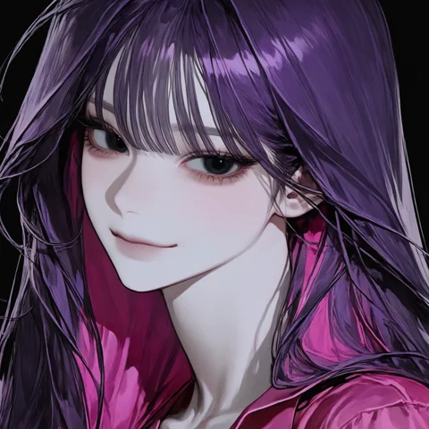

parkjueun
Diamonds on a Broken Stage
앞면
04:12

박주은
Park Jueun
팔로우
메시지
게시물
214
팔로워
38.2만
팔로잉
31
NULLPINK 이사
· STUDIO VIOLET · OFFLINE · ONE LINE · GUIDE
예쁜 것만 봅니다.
가디 · 홍조의 보호자
예쁜 것만 봅니다.
가디 · 홍조의 보호자
산책은 거의 그 사람이 감
nullpink.kr
새벽 수영 0일째 · 22:00 약 알람(7년째) · 염색 주기 3주 → 9일
N
NULLPINK
1
ONE LINE
g
가디 · 홍조
lot
경매
d
드레스룸
M
화보
게시물
인터뷰
태그됨
임시저장
MANIAC
· 박주은
by
Scroll
· 이 페이지는 크랙 스토리 속 가상의 계정입니다
parkjueun
×